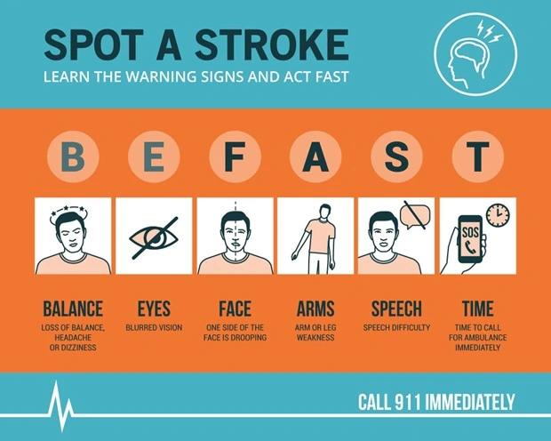

Signs of a Stroke in Men: Early Warning Signals, Hidden Risks & the Road to Full Recovery


02
Dec
Apricot Care
Introduction: The Emergency Most Men Ignore Until It’s Too Late
Men in India often dismiss early health symptoms—"It’s just tiredness… stress… lack of sleep."
But stroke doesn't wait.
According to the Indian Council of Medical Research (ICMR), India has seen a 100% increase in stroke cases, with men experiencing strokes nearly a decade earlier than women due to lifestyle stress, smoking, hypertension, and late diagnosis.
Knowing the stroke symptoms for men is not just medical awareness—it is emergency survival knowledge.
But the truth is:
- Reaching the hospital is only half the battle.
- Recovering your speech, balance, memory, and independence—that’s the real journey.
This guide reveals:
- ⚠️ Early & hidden signs of stroke in men.
- 📊 India-specific risk factors.
- 🧠 How the Golden Period (first 3–6 months) determines recovery.
- 🤖 Why choosing a specialized neuro rehab center in Pune accelerates recovery.
Let’s begin.
1. The FAST Rule: The Quickest Way to Spot a Stroke
A stroke occurs when blood supply to the brain is blocked or interrupted. Every passing minute destroys 1.9 million brain cells.
The FAST test is the global gold standard for instant recognition:

- F – Face
Drooping
- Ask him to smile.
- Check: Is one side drooping? Does he appear expressionless?
- A – Arm
Weakness
- Ask him to lift both arms.
- Check: Does one arm drift down? Does one feel numb or cold?
- S – Speech
Difficulty
- Ask him to repeat a simple line: "The sky is blue."
- Check: Is it slurred? Is he confused? Is he unable to form words?
- T – Time to Call
Help
- If you notice ANY of these signs:
- 📞 Call an ambulance immediately.
- ⏱ Every second matters.
Expert Insight:
"Waiting for symptoms to improve is the No. 1 mistake families make. Stroke is a brain attack—treat it like a 911 emergency."
— Dr. Jeyaraj Pandian, World Stroke Organization
2. Hidden Stroke Symptoms in Men (Often Missed Until Too Late)

Men commonly minimize or hide symptoms. These subtle signs are equally dangerous:
- A. The “Thunderclap Headache”
A sudden, intense headache—"the worst of my life"—can signal a brain bleed. - B. Loss of Balance or Sudden
Vertigo
If a man suddenly stumbles or feels the world spinning, it may be a cerebellar stroke. - C. Vision Loss in One
Eye
Seeing darkness in one eye, double vision, or blurred vision must not be ignored. - D. Numbness on One Side of the
Body
A tingling sensation in the right or left half of the body is a red alert. - E. Confusion or Sudden Personality
Changes
Irritability, aggression, or sudden emotional withdrawal can indicate a frontal lobe stroke. - F. Short Blackout Episodes
(TIAs)
A brief spell of weakness or collapse that recovers quickly is often a "mini-stroke"—a warning that a major stroke is likely within hours.
3. Why Indian Men Are at Higher Risk: The India-Specific Reality

Indian men face a different risk landscape compared to Western populations.
| Risk Factor | Impact on Men |
|---|---|
| Hypertension | Indian men have one of the highest rates globally; 1 in 4 has high BP. |
| Smoking | 70% of Indian smokers are men. Tobacco doubles stroke risk. |
| Abdominal Obesity | Even thin-looking men store visceral fat (belly fat)—highly dangerous for heart health. |
| Diabetes | India is the world's diabetes capital, increasing clot risk significantly. |
| Sedentary Lifestyle | IT/Corporate work culture increases stroke incidence among men aged 35–50. |
| Alcohol | Heavy weekend drinking spikes blood pressure immediately. |
4. You Survived the Stroke—Now What? Understanding the "Golden Period"
Most articles stop after "rush to the hospital."
But families are left wondering:
- How will he walk again?
- How will he talk or swallow safely?
- How long before he is independent?
This is where the Golden Period becomes crucial.
The Golden Period (First 3–6 Months Post-Stroke)
During this window, the brain enters a hyper-recovery phase known as neuroplasticity—its ability to rewire and rebuild lost functions.
- If you start aggressive
therapy NOW:
- ✔ Speech can return
- ✔ Mobility improves
- ✔ Swallowing strengthens
- ✔ Independence increases
- If therapy is
delayed:
- ❌ Muscles stiffen
- ❌ Brain stops relearning
- ❌ Disability becomes long-term
Did You Know? Recovering at a specialized center
like Apricot Care (Stroke
Rehabilitation Centre in Pune) can
improve recovery speeds by up to 40% compared to
simple home exercises because of the intensity and technology
used.
5. Why a Specialized Neuro Rehabilitation Centre in Pune Offers Better Recovery Than Home Physiotherapy
Home physiotherapy helps, but it cannot match the intensity and technology of a multi-disciplinary neuro rehab center.
At Apricot Care – Neuro Rehabilitation Centre, Pune, recovery is powered by:
A. Robotic-Assisted Neuro Therapy (High Repetitions = High Recovery)
- The Problem: Human therapists can perform 20–50 assisted movements before fatigue sets in.
- The Solution: Robotic devices perform 500+ repetitions per session.
- The Result: High-intensity training accelerates walking, hand movement, and grip strength.
B. Speech & Swallow Rehabilitation
Strokes often impair speech clarity and swallowing ability (Dysphagia). Our specialized speech therapists help men regain the ability to communicate and eat safely, which boosts confidence.
C. Psychological Support for Men
Stroke deeply affects emotional identity—especially for men who identify as providers. We offer depression counseling and motivation therapy to heal the mind alongside the body.
D. Assisted Living & Daily Function Relearning
Hospitals treat the emergency; we treat the everyday life. Patients relearn how to climb stairs, bathe, and dress independently in a supportive, home-like environment.
6. Prevention: Reduce the Risk of a Second Stroke
- ✔ Monitor Blood Pressure Weekly: Ideal target is 120/80.
- ✔ Quit Smoking: Risk drops by 50% within 2 years of quitting.
- ✔ Walk 30 Minutes Daily: Reduces stroke risk by 25%.
- ✔ Control Diabetes & Cholesterol: Routine blood tests every 6 months.
- ✔ Maintain Healthy Sleep: 7–8 hours to regulate blood pressure and stress.
Conclusion: Stroke Is Treatable, Recovery Is Possible
Recognizing the early signs of stroke in men can save a life.
But choosing the right rehabilitation can restore that life.
At Apricot Care – Neuro Rehabilitation Centre, Pune, we help stroke survivors rebuild movement, speech, memory, and confidence. Recovery is not luck—it is a science backed by the right team and the right timing.
FAQs
Q1. What are the first signs of stroke in men?
The FAST signs: Face drooping, Arm weakness, and Slurred speech. Men also commonly experience sudden "thunderclap" headaches, loss of balance, and vision changes in one eye.
Q2. Can a man fully recover from a stroke?
Yes. With early treatment and intensive rehabilitation during the Golden Period (3–6 months), men can regain significant function and independence.
Q3. Why choose a rehab center instead of home physiotherapy?
Rehab centers offer robotic technology, 24/7 nursing, speech/swallow therapy, and psychological counseling—creating an intensive environment for recovery that home care cannot replicate.
Q4. Does Apricot Care provide stroke rehab in Pune?
Yes, Apricot Care specializes in stroke, spinal injuries, Parkinson’s recovery, and complete neuro rehabilitation in Pune.